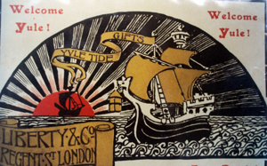

From opening in 1875, Liberty & Co developed a powerful position in the development of style and taste due largely to the great skill of Arthur Liberty in choosing what to sell and how to sell it. His marketing techniques seem particularly advanced for the period introducing lavishly illustrated catalogues, with sketches and then photographs to tempt buyers. As well as specialised furniture catalogues, the Yuletide Gifts series of catalogues became a regular and powerful sales technique.
Yuletide Gifts Christmas Catalogues
As a marketing strategy, the Yuletide Gifts series must have helped considerably to generate income for Liberty, creating a customer base outside of London and also providing income for their network of small craft workshops and businesses supplying goods to Regent Street. The Yuletide catalogues must also have helped greatly to spread interest in the Arts and Crafts style, offering a range of relatively affordable well made items, as a kind of entry level for the consumers of Arts and Crafts movement. Success however was not just dependent on selling small things to a large customer base but also to creating the very special designer range of rather exclusive furnishings at the top end of the market, reinforcing their position as a leader of taste and fashion in interior design. At this level the endorsement of leading art journals and magazines such as the Studio was very helpful indeed and there were some useful features which alongside Liberty adverts must have helped to maintain the Liberty profile. The Art Journal and the Magazine of Art were also good sources of publicity for Liberty & Co furnishings.
Leonard Wyburd was the principal designer for Liberty furniture and decoration from1883 and we can see the evolution of his style through the series of catalogues produced. As the Wyburd style developed from the early Arabian and Moorish styles of the 1880's there appears to have been a powerful alignment with the Arts and Crafts movement following the rustic and artistic style which Morris & Co were introducing.

A perfect alternative to mass produced furnishing was offered at Liberty's with resonance of Olde England. Ingle nook fireplaces with tiny hobbit like glazed cupboards, carved mottoes, and beaten copper fittings featured strongly in the distinct Wyburd style from the 1890s onwards. Ancient character was implied by the use of fumed oak ,‘bulls eye’ glass roundels, long barbed hinges, and heavy handles seemingly reclaimed from weaponry or castle ruins. The Holbein sideboard, later known as the Old Studio was a perfect example of this style.
From 1888 onwards Liberty catalogues introduced high quality craft items including repoussè copper, Brannam Pottery and postable ‘novelties’ including smokers cabinets, ladies bureaux, and occasional tables with eye catching features particularly heart pierced decoration, picture panels and designs by popular artists John Hassall and Cecil Aldin. Produced in the Liberty cabinet works in some numbers, many of these items survive today providing scope for collectors. These items, usually labelled, provide good investment potential.